청소년상담사-3급(2교시)(구) (2016-03-26 기출문제)
1과목: 학습이론
1. 학습의 개념에 대한 설명으로 옳지 않은 것은?
- 행동의 변화는 비교적 영속적으로 나타나야 한다.
- 행동 잠재력의 변화도 학습이다.
- 행동의 변화는 경험이나 연습을 통해 얻어진다.
- 정서의 변화는 학습에 포함되지 않는다.
- 성숙에 의한 변화는 학습이 아니다.
(정답률: 62%)

2. 반두라(A. Bandura)의 관찰학습에 관한 설명으로 옳지 않은 것은?
- 모델의 행동에 집중한다면 반드시 모방하게 된다.
- 모델은 반드시 실제 인물이 아니라도 효과가 있다.
- 학습이 이루어지기 위해서는 모델의 행동을 기억해야 한다.
- 행동, 환경, 개인은 서로 양방향적 영향을 미친다.
- 모델의 매력도는 관찰학습에 영향을 미친다.
(정답률: 63%)
3. 고전적 조건형성에 관한 설명으로 옳은 것은?
- 적절한 행동은 즉시 강화하고, 부적절한 행동은 무시함으로써, 새로운 행동을 가르칠 수 있다.
- 중립자극은 무조건 자극 직후에 제시되어야 한다.
- 행동변화의 효과를 거두기 위해서는 적절한 반응의 수나 비율에 따라 강화가 이루어져야 한다.
- 모든 자극에 대한 모든 반응은 연쇄(chaining)를 사용하여 조건형성 할 수 있다.
- 대부분의 정서적인 반응들은 고전적 조건형성을 통해 학습될 수 있다.
(정답률: 27%)
4. 숙달목표지향성과 수행목표지향성에 관한 설명으로 옳지 않은 것은?
- 숙달목표지향성이 낮은 학생은 도전적 과제를 선호한다.
- 수행목표지향성이 높은 학생은 타인과의 비교를 통하여 자신의 성공여부를 판단한다.
- 규준지향평가는 숙달목표지향성 발달에 부정적 영향을 미친다.
- 숙달목표지향성이 높은 학생은 지능에 대한 고정 신념(entity beliefs)보다 증가 신념(incremental beliefs)이 강하다.
- 수행목표지향성이 높은 학생은 과제 실패 시 불안감을 많이 경험한다.
(정답률: 69%)
5. 다음 사례에 해당하는 개념은?
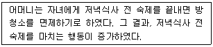
- 소거
- 정적 강화
- 부적 강화
- 수여형 처벌
- 제거형 처벌
(정답률: 72%)
6. 다음 사례에 해당하는 기억술은?
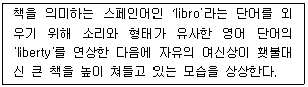
- 약어(acronym)
- 연쇄기억술(chain mnemonics)
- 핵심단어법(keyword method)
- 페그워드법(pegword method)
- 장소법(loci method)
(정답률: 39%)
7. 구성주의 학습이론에 관한 설명으로 옳은 것을 모두 고른 것은?
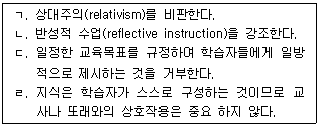
- ㄱ, ㄴ
- ㄴ, ㄷ
- ㄷ, ㄹ
- ㄴ, ㄷ, ㄹ
- ㄱ, ㄴ, ㄷ, ㄹ
(정답률: 50%)
8. 다음의 사례에 해당하는 개념은?
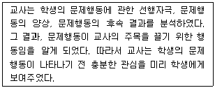
- 유관계약(contingency contract)
- 기능적 분석(functional analysis)
- 자기지각(self-awareness)
- 복합 강화 계획(complex schedule)
- 포화(satiation)
(정답률: 65%)
9. 정서적인 아픔이 너무 커서 그 일이 전혀 기억이 나지 않거나 그 일의 일부 조각들만이 기억되는 현상은?
- 억압(repression)
- 간섭(interference)
- 인출실패(retrieval failure)
- 쇠퇴(decay)
- 억제(suppression)
(정답률: 39%)
10. 학습의 전이(transfer)에 관한 설명으로 옳지 않은 것은?
- 구체적 사실보다 일반적인 원리를 학습할 때 전이가 촉진된다.
- 전이는 학습자의 학습태도와 수업방법에 따라 다르지만, 연령과는 무관하다.
- 전이는 의식적으로 노력하지 않아도 나타날 수 있다.
- 선행학습이 후행학습을 어렵게 하거나 방해하는 경우도 전이에 포함된다.
- 전이는 이미 학습한 내용보다 높은 수준의 과제를 학습할 때에도 나타난다.
(정답률: 47%)
11. 조작적 조건형성에 관한 설명으로 옳지 않은 것을 모두 고른 것은?
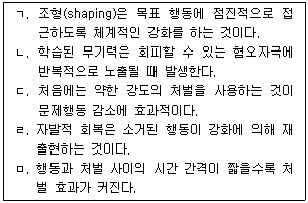
- ㄱ, ㅁ
- ㄴ, ㄹ
- ㄱ, ㄷ, ㅁ
- ㄴ, ㄷ, ㄹ
- ㄱ, ㄴ, ㄷ, ㄹ
(정답률: 24%)
12. 인간의 뇌 발달에 관한 설명으로 옳지 않은 것은?
- 3세 아동의 시냅스 수가 성인의 시냅스 수보다 많다.
- 신경망 가지치기 시기는 각 대뇌 피질 영역에 따라 다르다.
- 풍부한 환경은 시냅스의 연결을 가속화한다.
- 대뇌 피질 영역 중 브로카와 베르니케 영역이 손상되면 실어증을 초래한다.
- 대뇌 피질 영역 중 전두엽의 발달은 영유아 시기에 완성된다.
(정답률: 59%)
13. 더 선호되는 행동이 덜 선호되는 행동을 증가시키기 위한 정적 강화물(reinforcer)로 작용하는 현상은?
- 프리맥의 원리
- 자극통제
- 반응대가
- 차별강화
- 잠재적 억제
(정답률: 60%)
14. 학습이론에 관한 설명으로 옳은 것은?
- 인지주의: 학습은 지식을 습득, 기억, 활용하는 정신과정이라고 본다.
- 행동주의: 학습은 관찰 가능한 현상에 국한되지 않는다.
- 구조주의: 정신의 구조, 작용과정에 대한 연구는 무의미하다.
- 합리주의: 경험이 지식의 유일한 근원이다.
- 행동주의: 학습은 내적 정신과정을 포함한다.
(정답률: 57%)
15. 정보처리이론에 관한 설명으로 옳은 것을 모두 고른 것은?
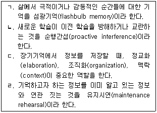
- ㄱ, ㄴ
- ㄱ, ㄷ
- ㄴ, ㄷ
- ㄴ, ㄹ
- ㄷ, ㄹ
(정답률: 50%)
16. 사회인지학습이론에 관한 설명으로 옳은 것은?
- 상호결정주의 원리를 비판하였다.
- 모델링을 통해 억제(inhibition)와 탈억제(disinhibition)가 모두 가능하다.
- 직접 모델링보다는 상징적 모델링이 효과적이다.
- 공포증, 불안감과 같은 정서는 모델링으로 학습될 수 없다.
- 관찰학습은 주의집중, 동기화, 파지, 운동재생의 순서로 진행된다.
(정답률: 70%)
17. 학습의 전이(transfer)에 관한 특성으로 옳은 것을 모두 고른 것은?
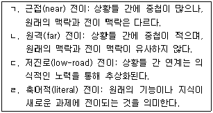
- ㄱ, ㄴ
- ㄱ, ㄷ
- ㄴ, ㄷ
- ㄴ, ㄹ
- ㄷ, ㄹ
(정답률: 16%)
18. 기억에 관련된 뇌의 신경전달 물질을 모두 고른 것은?
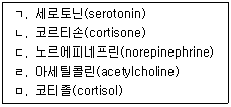
- ㄱ, ㄷ
- ㄷ, ㅁ
- ㄱ, ㄷ, ㄹ
- ㄷ, ㄹ, ㅁ
- ㄱ, ㄷ, ㄹ, ㅁ
(정답률: 50%)
19. 와이너(B. Weiner)의 귀인이론에서 귀인의 예와 이에 해당하는 3가지 차원으로 옳지 않은 것은?
- 과목특성: 외부, 안정, 통제 불가능
- 노력: 내부, 불안정, 통제 가능
- 운(행운, 불운): 외부, 불안정, 통제 불가능
- 능력: 내부, 안정, 통제 불가능
- 친구의 도움: 외부, 불안정, 통제 가능
(정답률: 62%)
20. 사회인지학습이론의 기본 가정에 관한 설명으로 옳은 것을 모두 고른 것은?
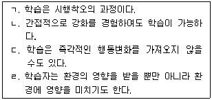
- ㄱ, ㄴ
- ㄷ, ㄹ
- ㄱ, ㄴ, ㄹ
- ㄴ, ㄷ, ㄹ
- ㄱ, ㄴ, ㄷ, ㄹ
(정답률: 0%)
21. 고전적 조건형성을 적용한 예로 옳지 않은 것은?
- 수능시험을 걱정하는 수험생에게 그 시험 역시 그동안 치렀던 모의시험과 다를 바 없음을 납득시킴으로써 시험불안을 줄여준다.
- 수줍음을 많이 타는 학생에게 학습자료를 배포하게 함으로써 수줍음을 경감시킨다.
- 학생들에게 부정적인 정서반응을 일으키는 개인 간 경쟁보다 집단 경쟁과 협동을 강조하여, 부정적인 정서를 완화시킨다.
- 편안한 공간을 만들어서 독서에 대한 거부감을 줄여준다.
- 학생이 새로운 학습전략을 시도할 때 강화를 충분히 해 준다.
(정답률: 59%)
22. 에클스와 윅필드(J. Eccles & A. Wigfield)가 정의한 과제가치에 관한 설명으로 옳지 않은 것은?
- 내재가치는 과제를 수행할 때 경험하는 흥미이다.
- 획득가치는 과제를 잘하는 것에 대한 중요성이다.
- 비용신념은 과제에 관여하는 것에 대한 긍정적 측면이다.
- 효용가치는 미래 목표 측면에서 개인이 과제에 가지는 유용성이다.
- 과제에 대한 개인의 정서적 경험은 과제가치에 영향을 준다.
(정답률: 62%)
23. 고전적 조건형성에 영향을 미치는 요인으로 옳은 것을 모두 고른 것은?
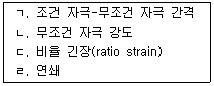
- ㄱ, ㄴ
- ㄴ, ㄷ
- ㄷ, ㄹ
- ㄱ, ㄴ, ㄷ
- ㄱ, ㄴ, ㄷ, ㄹ
(정답률: 31%)
24. 내재적으로 동기화된 과제를 수행할 때 외적 보상을 받게 되면, 자신의 과제수행 이유를 외적 보상으로 귀인하여 내재 동기가 감소하는 현상은?
- 몰입(flow)
- 자기결정(self-determination)
- 과잉정당화(overjustification)
- 자기조절(self-regulation)
- 외재 동기(extrinsic motivation)
(정답률: 0%)
25. 고전적 조건형성의 원리를 적용한 것은?
- 교란(distraction)
- 체계적 둔감법(systematic desensitization)
- 자극통제(stimulus control)
- 유관계약(contingency contract)
- 자기강화(self-reinforcement)
(정답률: 67%)
26. 사회인지이론에서 제시한 자기효능감(self-efficacy)에 관한 설명으로 옳은 것을 모두 고른 것은?
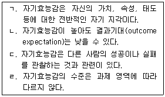
- ㄱ, ㄴ
- ㄴ, ㄷ
- ㄷ, ㄹ
- ㄱ, ㄴ, ㄷ
- ㄴ, ㄷ, ㄹ
(정답률: 29%)
27. 학습이론가와 이들이 채택한 심리학적 패러다임이 바르게 연결된 것을 모두 고른 것은?
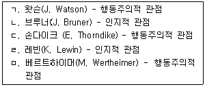
- ㄱ, ㄹ
- ㄱ, ㄴ, ㅁ
- ㄴ, ㄷ, ㄹ
- ㄱ, ㄴ, ㄷ, ㄹ
- ㄱ, ㄴ, ㄷ, ㄹ, ㅁ
(정답률: 20%)
28. 동기와 정서에 관한 설명으로 옳은 것은?
- 과제난이도가 높을수록 내재 동기도 높아진다.
- 부정적 정서는 내재 동기를 증가시킨다.
- 귀인의 차원에 따라 경험하는 정서가 달라진다.
- 불안 수준이 높을수록 학습몰입도 높아진다.
- 자기효능감이 낮은 학생보다 높은 학생이 실패 시 불안감을 더 많이 경험한다.
(정답률: 43%)
29. 조작적 조건형성에 관한 설명으로 옳지 않은 것은?
- 강화자극(reinforcing stimulus)은 변별자극이 주어질 때 반응이 일어날 가능성을 증가시키는 자극이다.
- 하나 이상의 1차 강화물과 연합된 2차 강화물은 구체적 강화물(specific reinforcer)이다.
- 학교에서 매주 금요일마다 30분의 자유시간이 허용된 학생들은 고정간격 강화를 받고 있는 것이다.
- 칭찬-무시 접근은 학급 운영에 도움이 될 수 있지만, 그것이 모든 문제를 해결할 것으로 기대해서는 안 된다.
- 수업시간에 떠드는 학생을 짧은 시간 동안 다른 학생들로부터 격리시키는 것을 일시격리(time out)라 한다.
(정답률: 64%)
30. 목표의 속성과 효과에 관한 설명으로 옳은 것은?
- 수행에 대한 구체적인 기준을 함께 제시한 목표는 동기를 낮춘다.
- 아동에게 단기목표는 중요하지 않다.
- 자신에 대한 믿을 만한 정보가 없을 때 목표 진척에 대한 피드백을 제공하는 것은 효과적이지 않다.
- 스스로 설정한 목표는 성취동기가 높은 학습자에게는 효과적이지 않다.
- 목표 난이도와 수행의 관계는 학습자가 목표에 도달할 수 있는 능력에 따라 달라진다.
(정답률: 77%)
2과목: 청소년이해론
31. 매슬로우(A. Maslow)의 욕구위계이론에 관한 설명으로 옳은 것은?
- 낮은 단계일수록 욕구 강도가 강하다.
- 자아실현의 욕구는 청소년기가 되면서 나타나기 시작한다.
- 상위 단계의 욕구는 개인의 생존에 중요한 역할을 한다.
- 대부분의 사람들이 자아실현의 욕구를 달성한다.
- 인간의 욕구를 4단계로 설명하고 있다.
(정답률: 70%)
32. 다음의 특징이 나타내는 문화의 일반적 속성은?
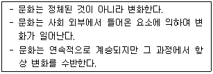
- 공유성
- 다양성
- 학습성
- 가변성
- 축적성
(정답률: 67%)
33. 청소년 비행과 관련하여 허쉬(T. Hirschi)가 제시한 4가지 사회적 유대요인이 아닌 것은?
- 애착(attachment)
- 관여(commitment)
- 긴장(strain)
- 참여(involvement)
- 신념(belief)
(정답률: 58%)
34. 스탠리 홀(S. Hall)의 이론에 관한 설명으로 옳은 것은?
- 사회문화적 특성이 청소년 발달에 결정적인 영향을 미친다.
- 인간의 생애발달은 3단계를 거쳐 이루어진다.
- 청소년기에는 갈등과 정서의 혼란을 경험한다.
- 다윈(C. Darwin)의 이론을 거부하고 새로운 청소년발달 이론을 제시하였다.
- 인간의 발달을 자극과 반응으로 설명한다.
(정답률: 47%)
35. '청소년들은 사회적 규범을 깨뜨리는 것에서 쾌감을 느끼며, 이를 통해 자신들의 문화정체성을 찾는다'는 관점의 청소년문화는?
- 미숙한 문화
- 새로운 문화
- 주류문화
- 비행문화
- 하위문화
(정답률: 62%)
36. 청소년복지 지원법령상 위기청소년에게 지원할 수 있는 내용을 모두 고른 것은?
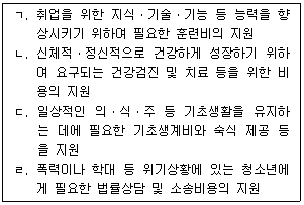
- ㄱ, ㄴ
- ㄴ, ㄷ
- ㄱ, ㄴ, ㄷ
- ㄱ, ㄷ, ㄹ
- ㄱ, ㄴ, ㄷ, ㄹ
(정답률: 72%)
37. 반두라(A. Bandura)가 제시한 관찰학습에서 관찰한 행동을 기억하는 과정은?
- 주의(attention)
- 파지(retention)
- 실행(implementation)
- 동기(motivation)
- 운동재생(motor reproduction)
(정답률: 58%)
38. 여성가족부와 지방자치단체가 공동 운영하고 있는 청소년방과후아카데미 사업의 대상에 해당하지 않는 청소년은?
- 초등학교 4학년
- 초등학교 5학년
- 중학교 1학년
- 중학교 2학년
- 고등학교 1학년
(정답률: 67%)
39. 마짜(D. Matza)와 사이크스(G. Sykes)가 제시한 다음의 중화기술은?
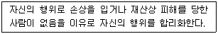
- 책임의 부정
- 가해의 부정
- 피해자의 부정
- 비난자 비난
- 높은 충성심에 호소
(정답률: 22%)
40. 엘킨드(D. Elkind)가 제시한 청소년기 자아중심성으로 인하여 나타나는 현상을 모두 고른 것은?
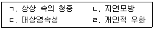
- ㄱ, ㄴ
- ㄱ, ㄷ
- ㄱ, ㄹ
- ㄴ, ㄷ
- ㄷ, ㄹ
(정답률: 65%)
41. 스턴버그(R. Sternberg)가 제시한 사랑의 3요소 중 열정(passion)만 제외된 사랑의 형태는?
- 우애적 사랑(companionate love)
- 낭만적 사랑(romantic love)
- 얼빠진 사랑(fatuous love)
- 공허한 사랑(empty love)
- 우정(friendship)
(정답률: 50%)
42. 학교폭력예방 및 대책에 관한 법률상 가해학생에 대한 조치를 모두 고른 것은?
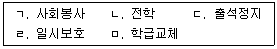
- ㄱ, ㄷ, ㅁ
- ㄴ, ㄷ, ㄹ
- ㄴ, ㄹ, ㅁ
- ㄱ, ㄴ, ㄷ, ㅁ
- ㄱ, ㄴ, ㄷ, ㄹ, ㅁ
(정답률: 73%)
43. 인지발달적 측면에서 성역할을 설명한 학자는?
- 로저스(C. Rogers)
- 게젤(A. Gesell)
- 베네딕트(R. Benedict)
- 콜버그(L. Kohlberg)
- 프로이드(S. Freud)
(정답률: 19%)
44. 청소년문화에 관한 학자와 이론 내용이 바르게 연결된 것을 모두 고른 것은?
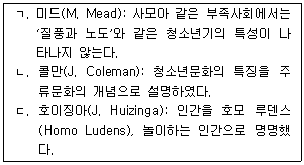
- ㄱ
- ㄴ
- ㄷ
- ㄱ, ㄴ
- ㄱ, ㄷ
(정답률: 24%)
45. 다음이 설명하는 용어는?
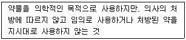
- 약물중독
- 약물오용
- 약물의존
- 약물내성
- 금단현상
(정답률: 72%)
46. 설리반(H. Sullivan)의 대인관계 발달단계에 관한 설명으로 옳지 않은 것은?
- 아동기: 아동의 놀이에 성인이 참여해 주기를 원함
- 소년ㆍ소녀기: 또래 놀이친구를 얻고자 하는 욕구가 커짐
- 전청소년기: 친밀한 동성 친구를 갖고 싶은 욕구를 느낌
- 청소년 초기: 이성친구와의 친밀감 욕구를 느낌
- 청소년 후기: 성적 접촉의 욕구를 느낌
(정답률: 43%)
47. 청소년복지 지원법의 내용으로 옳지 않은 것은?
- 국가는 지역사회 청소년통합지원체계의 구축ㆍ운영을 지원하여야 한다.
- 청소년증은 9세 이상 24세 이하의 청소년에게 발급할 수 있다.
- 청소년복지시설의 종류에는 청소년쉼터, 청소년자립지원관, 청소년치료재활센터가 있다.
- 보호자란 친권자, 법정대리인 또는 사실상 청소년을 양육하는 사람을 말한다.
- 국가는 위기청소년의 가족에 대한 상담 및 교육을 실시할 수 있다.
(정답률: 75%)
48. 인터넷 중독에 영향을 주는 심리적 요인을 모두 고른 것은?
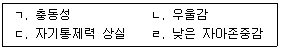
- ㄱ, ㄴ
- ㄱ, ㄹ
- ㄱ, ㄷ, ㄹ
- ㄴ, ㄷ, ㄹ
- ㄱ, ㄴ, ㄷ, ㄹ
(정답률: 70%)
49. 여성의 도덕성 발달과정에 관한 이론을 제시한 학자는?
- 콜버그(L. Kohlberg)
- 왓슨(J. Watson)
- 길리건(C. Gilligan)
- 손다이크(E. Thorndike)
- 에릭슨(E. Erikson)
(정답률: 62%)
50. 브론펜브레너(U. Bronfenbrenner)의 생태학적 체계에서 미시체계에 속하지 않는 것은?
- 사회정책
- 학교
- 또래집단
- 형제자매
- 가정
(정답률: 62%)
51. 청소년의 가출유형에 관한 설명으로 옳지 않은 것은?
- 시위성 가출: 가족구성원들이 자신에게 관심을 갖기를 원하는 목적으로 행하는 경우
- 도피성 가출: 단순히 친구들과 어울려 놀고 싶은 충동에 의해 가출하는 경우
- 추방형 가출: 가족이나 주위 환경으로부터 가출을 하도록 떠밀려 나온 경우
- 방랑성 가출: 밖에서 생활하는 것이 좋아 1~2년 정도 밖에서 배회하면서 사는 것이 생활이 된 경우
- 생존성 가출: 가족의 신체적ㆍ심리적 학대로부터 생존을 위해 어쩔 수 없이 도망쳐 나온 경우
(정답률: 60%)
52. 자아정체감에 관한 설명으로 옳지 않은 것은?
- 연령이 증가할수록 자아정체감 성취의 비율도 증가한다.
- 청소년기는 선택과 결정의 시기이기 때문에 자아정체감이 중요하다.
- 자아정체감 유예와 성취의 공통점은 위기 경험이다.
- 마르샤(J. Marcia)가 제시한 자아정체감의 지위(status)에는 통합(integration)이 포함된다.
- 마르샤(J. Marcia)는 자아정체감의 지위(status)를 위기와 관여(commitment)에 따라 구분한다.
(정답률: 67%)
53. 청소년복지 지원법상 다문화가족의 청소년을 지원할 목적으로 설치ㆍ운영할 수 있는 기관은?
- 지역아동센터
- 이주배경청소년지원센터
- 청소년꿈키움센터
- 청소년보호ㆍ재활센터
- 지방청소년활동진흥센터
(정답률: 72%)
54. 청소년 관련법상 제시된 청소년 참여기구를 모두 고른 것은?
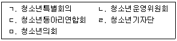
- ㄱ, ㄴ
- ㄱ, ㅁ
- ㄴ, ㄷ, ㄹ
- ㄱ, ㄴ, ㅁ
- ㄴ, ㄷ, ㄹ, ㅁ
(정답률: 25%)
55. 학교폭력의 예방 및 대책에 관련된 사항을 심의하기 위하여 학교에 설치하는 기구는?
- 학교폭력대책자치위원회
- 학교폭력대책지역위원회
- 청소년보호위원회
- 청소년정책위원회
- 학교폭력대책위원회
(정답률: 39%)
56. 청소년보호법상 청소년유해환경에 해당되는 것을 모두 고른 것은?
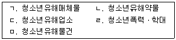
- ㄱ, ㄴ
- ㄴ, ㄷ, ㄹ
- ㄷ, ㄹ, ㅁ
- ㄱ, ㄴ, ㄷ, ㅁ
- ㄱ, ㄴ, ㄷ, ㄹ, ㅁ
(정답률: 82%)
57. 긴즈버그(E. Ginzberg)의 직업선택 발달이론에서 잠정적 단계(tentative period)에 포함되지 않는 것은?
- 흥미기(interest stage)
- 가치기(value stage)
- 능력기(capacity stage)
- 환상기(fantasy stage)
- 전환기(transition stage)
(정답률: 72%)
58. 문화현상에 대하여 다음과 같이 주장한 학자는?
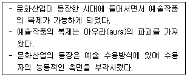
- 뒤르껭(E. Durkheim)
- 밀즈(C. Mills)
- 리비스(F. Leavis)
- 브루디외(P. Bourdieu)
- 벤야민(W. Benjamin)
(정답률: 28%)
59. 머튼(R. Merton)의 아노미 이론에서, 개인이 문화적 목표는 거부하지만 제도화된 수단은 수용하는 유형은?
- 동조형(conformity)
- 혁신형(innovation)
- 의례형(rituals)
- 도피형(retreatism)
- 반항형(rebellion)
(정답률: 65%)
60. 홀랜드(J. Holland)의 이론에서 사회형에 속하는 직업을 모두 고른 것은?
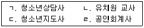
- ㄱ, ㄴ
- ㄱ, ㄷ
- ㄱ, ㄴ, ㄷ
- ㄱ, ㄷ, ㄹ
- ㄴ, ㄷ, ㄹ
(정답률: 65%)
3과목: 청소년수련활동론
61. 청소년 기본법상 청소년활동의 정의다. ( )에 들어갈 활동으로 옳은 것은?
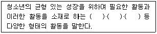
- 수련활동, 교류활동, 문화활동
- 문화활동, 동아리활동, 참여활동
- 자율활동, 동아리활동, 봉사활동
- 동아리활동, 문화예술활동, 진로활동
- 진로활동, 봉사활동, 자기계발활동
(정답률: 9%)
62. 청소년 기본법령상 청소년상담복지센터에 근무하는 청소년상담사의 보수교육 시간은?
- 매년 6시간 이내
- 매년 8시간 이상
- 매년 15시간 이상
- 2년마다 15시간 이내
- 2년마다 20시간 이상
(정답률: 0%)
63. 역량을 아래 3가지 영역으로 분류한 체계는?
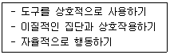
- 여성가족부의 핵심역량 체계
- 유니세프의 아동청소년발달 역량 체계
- OECD의 DeSeCo 생애핵심역량 체계
- 국가직무능력표준(NCS)의 직무역량 체계
- 피트만(K. Pittman)의 지역활동역량 체계
(정답률: 0%)
64. 청소년수련시설이 아닌 것은?
- 유스호스텔
- 청소년수련원
- 청소년야영장
- 청소년쉼터
- 청소년특화시설
(정답률: 8%)
65. 다음에서 설명하는 청소년 프로그램 개발 접근의 원리는?
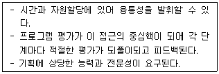
- 선형적 접근
- 비선형적 접근
- 비통합적 접근
- 통합적 접근
- 중층적 접근
(정답률: 0%)
66. 청소년수련활동 인증제도를 운영하는 기관은?
- 한국청소년정책연구원
- 한국청소년단체협의회
- 한국청소년활동진흥원
- 한국청소년수련시설협회
- 한국청소년상담복지개발원
(정답률: 0%)
67. 청소년활동 프로그램 개발의 패러다임에 관한 설명으로 옳은 것은?
- 실증주의: 교육을 의식화 과정으로 간주하여 학습자의 참여와 임파워먼트(empowerment) 강조
- 구성주의: 청소년을 실존적이고, 의미를 창조해가는 주체적인 존재로 간주
- 비판주의: 프로그램에 참여하는 다양한 사람들의 합의에 기초를 둔 집단 의사결정 과정 강조
- 구조주의: 청소년의 외부세계에 존재하는 새로운 지식과 정보, 프로그램 개발의 절차 등 강조
- 기능주의: 프로그램의 내용을 나선형으로 배치
(정답률: 0%)
68. 청소년 체험활동 관련 정보를 제공하는 웹사이트가 아닌 것은?
- 꿈길(ggoomgil)
- 크레존(crezone)
- 커리어넷(career-net)
- 두볼(Dovol)
- CYS-net
(정답률: 8%)
69. 청소년의 진로교육 활성화를 위하여 시행되고 있는 정책이 아닌 것은?
- 진로전담교사의 학교 배치
- 지역진로교육센터의 설치ㆍ운영
- 진로심리검사의 의무화
- 진로교육법의 제정
- '진로와 직업' 교과의 운영
(정답률: 0%)
70. 자유학기제에 관한 설명으로 옳지 않은 것은?
- 지역사회와 연계하여 다양한 체험 중심의 자유학기 활동을 운영한다.
- 자유학기 활동상황을 학교생활기록부에 기록한다.
- 자유학기에도 중간기말고사 등 일제식 지필평가를 실시한다.
- 해당 학기의 창의적 체험활동을 자유학기의 취지에 부합하도록 편성ㆍ운영한다.
- 협동학습, 토의ㆍ토론 학습, 프로젝트 학습 등 학생 참여형 수업을 강화한다.
(정답률: 8%)
71. 청소년수련활동 인증제의 인증기준에서 공통기준이 아닌 것은?
- 프로그램 구성
- 영양관리자 자격
- 프로그램 자원 운영
- 지도자 역할 및 배치
- 공간과 설비의 확보 및 관리
(정답률: 8%)
72. 청소년지도방법의 원리와 내용의 연결이 바르지 않은 것은?
- 다양성의 원리 - 청소년의 다양한 차이와 요구를 감안하여 그에 적합한 지도방법을 모색함
- 협동성의 원리 - 청소년 상호 간의 유기적인 협력이 이루어지도록 함
- 활동중심의 원리 - 청소년의 실천적 행위와 체험이 중심이 되어야 함
- 맥락의 원리 - 청소년이 처한 삶의 상황과 관계를 총체적으로 고려하여 청소년을 이해하고 적합한 방법을 구성하여 적용함
- 효과성의 원리 - 가장 적은 시간과 비용, 에너지 등을 투입하여 청소년지도의 목표를 달성함
(정답률: 8%)
73. 개인 중심 청소년지도방법의 유형은?
- 역할연기
- 강의형 기법
- 배심토론
- 필립66
- 도제제도
(정답률: 9%)
74. 청소년 기본법령상 청소년상담사의 배치기준으로 옳지 않은 것은?
- 특별시ㆍ광역시ㆍ도 및 특별자치도에 설치된 청소년상담복지센터에는 청소년상담사 2명 이상을 둔다.
- 시ㆍ군ㆍ구에 설치된 청소년상담복지센터에는 청소년상담사 1명 이상을 둔다.
- 청소년치료재활센터에는 청소년상담사 1명 이상을 둔다.
- 청소년자립지원관에는 청소년상담사 1명 이상을 둔다.
- 청소년쉼터에는 청소년상담사 1명 이상을 둔다.
(정답률: 0%)
75. 청소년활동 진흥법상 청소년수련시설 설치ㆍ운영에 관한 설명으로 옳은 것은?
- 국가는 둘 이상의 시ㆍ도 또는 전국의 청소년이 이용할 수 있는 국립청소년수련시설을 설치ㆍ운영해야 한다.
- 시ㆍ군ㆍ구에는 청소년수련원을 1개소 이상 설치ㆍ운영해야 한다.
- 시ㆍ군ㆍ구에는 청소년문화의 집을 1개소 이상 설치ㆍ운영해야 한다.
- 국가 또는 지방자치단체는 수련시설 설치ㆍ운영에 필요한 경비의 일부 또는 전부를 보조해야 한다.
- 읍ㆍ면ㆍ동에는 청소년수련관을 1개소 이상 설치ㆍ운영해야 한다.
(정답률: 7%)
76. 칙센트미하이(M. Csikszentmihalyi)가 제시한 개념으로 '자기목적적인 경험으로서 활동 자체를 즐기면서 모든 관심을 완전히 투사하고 있는 상태'를 의미하는 것은?
- 실존
- 투영
- 성취
- 몰입
- 성찰
(정답률: 0%)
77. 청소년활동 진흥법령상 청소년특화시설의 운영대표자 자격 기준으로 옳은 것은?
- 2급 청소년지도사 자격증 취득 후 청소년육성업무에 1년 이상 종사한 사람
- 2급 청소년지도사 자격증 취득 후 청소년육성업무에 2년 이상 종사한 사람
- 2급 청소년지도사 자격증 취득 후 청소년육성업무에 3년 이상 종사한 사람
- 3급 청소년지도사 자격증 취득 후 청소년육성업무에 3년 이상 종사한 사람
- 3급 청소년지도사 자격증 취득 후 청소년육성업무에 4년 이상 종사한 사람
(정답률: 0%)
78. 청소년활동 진흥법상 청소년수련시설 운영대표자가 정기 안전점검 실시 후 그 결과를 제출해야 하는 대상에 포함되는 것은?
- 보건복지부장관
- 특별자치시장
- 교육부장관
- 국무총리
- 행정자치부장관
(정답률: 0%)
79. 브레인스토밍(brainstorming)에 관한 설명으로 옳은 것을 모두 고른 것은?
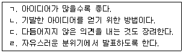
- ㄱ, ㄴ, ㄷ
- ㄱ, ㄴ, ㄹ
- ㄴ, ㄷ, ㄹ
- ㄱ, ㄷ, ㄹ
- ㄱ, ㄴ, ㄷ, ㄹ
(정답률: 9%)
80. 청소년활동 진흥법상 청소년동아리활동에 필요한 장소, 장비 등을 지원할 수 있는 청소년수련시설이 아닌 것은?
- 청소년수련관
- 청소년미디어센터
- 청소년문화교류센터
- 청소년직업체험센터
- 청소년비행예방센터
(정답률: 8%)
81. 청소년활동 진흥법령상 청소년수련시설의 기록ㆍ유지관리에 관한 설명으로 옳지 않은 것은?
- 시설물안전점검 기록대장을 비치하여야 한다.
- 숙박자의 개인 신상정보를 기록ㆍ보관하여야 한다.
- 청소년수련활동 참여자 명단을 기록하여야 한다.
- 일일 청소년수련활동실시 현황부를 기록하여야 한다.
- 재직 중인 청소년지도사 및 직원명부를 관리하여야 한다.
(정답률: 7%)
82. 청소년문화활동의 진흥을 위한 국가 및 지방자치단체의 역할로 옳지 않은 것은?
- 청소년문화시설 확충
- 청소년어울림마당 사업 운영
- 청소년문화활동 프로그램 개발
- 청소년동아리단체의 수동적 참여 유도
- 청소년문화활동에 대한 청소년의 참여 기반 조성
(정답률: 0%)
83. 청소년특별회의에 관한 설명으로 옳은 것을 모두 고른 것은?
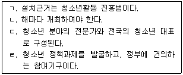
- ㄱ, ㄴ
- ㄴ, ㄷ
- ㄴ, ㄹ
- ㄱ, ㄴ, ㄷ
- ㄴ, ㄷ, ㄹ
(정답률: 8%)
84. 청소년활동 진흥법상 청소년운영위원회에 관한 설명으로 옳지 않은 것은?
- 청소년수련관에서 운영하는 기구이다.
- 청소년의 참여를 보장하기 위한 기구이다.
- 청소년참여위원회의 활동을 보조하기 위한 기구이다.
- 청소년문화의 집에서 운영하는 기구이다.
- 청소년의 의견을 수련시설 운영에 반영하기 위한 기구이다.
(정답률: 0%)
85. 청소년활동 진흥법상 청소년수련활동 관련 정보 공개를 위하여 온라인 종합정보제공시스템을 구축해야 하는 자는?
- 여성가족부장관
- 고용노동부장관
- 교육부장관
- 보건복지부장관
- 문화체육관광부장관
(정답률: 7%)
86. 국제청소년성취포상제의 은장 활동영역으로 옳지 않은 것은?
- 봉사활동
- 탐험활동
- 합숙활동
- 자기개발활동
- 신체단련활동
(정답률: 0%)
87. 콜브(D. Kolb)가 제시한 경험학습의 진행과정이 아닌 것은?
- 추상적 개념화(abstract conceptualization)
- 적극적 실험(active experimentation)
- 반성적 관찰(reflective observation)
- 주도적 개입(initiative involvement)
- 구체적 경험(concrete experience)
(정답률: 0%)
88. 청소년활동 진흥법령상 청소년수련활동 인증제도에 관한 설명으로 옳지 않은 것은?
- 개인도 인증을 신청할 수 있다.
- 청소년단체도 인증을 신청할 수 있다.
- 지방자치단체도 인증을 신청할 수 있다.
- 위험도가 높은 청소년활동은 인증을 신청할 수 없다.
- 청소년 참가인원이 150명 이상인 경우 인증을 받아야 한다.
(정답률: 0%)
89. 청소년활동 프로그램 개발과정을 순서대로 바르게 나열한 것은?
- 기획-설계-평가-피드백-마케팅
- 실행-평가-마케팅-기획-설계
- 설계-기획-마케팅-실행-평가
- 기획-실행-설계-마케팅-평가
- 기획-설계-마케팅-실행-평가
(정답률: 7%)
90. 청소년 기본법상 한국청소년단체협의회의 활동 내용이 아닌 것은?
- 지역사회 청소년통합지원체계의 구축ㆍ운영
- 청소년 관련 분야의 국제기구활동
- 회원단체의 사업과 활동에 대한 협조ㆍ지원
- 청소년지도자의 연수와 권익 증진
- 외국 청소년단체와의 교류 및 지원
(정답률: 0%)